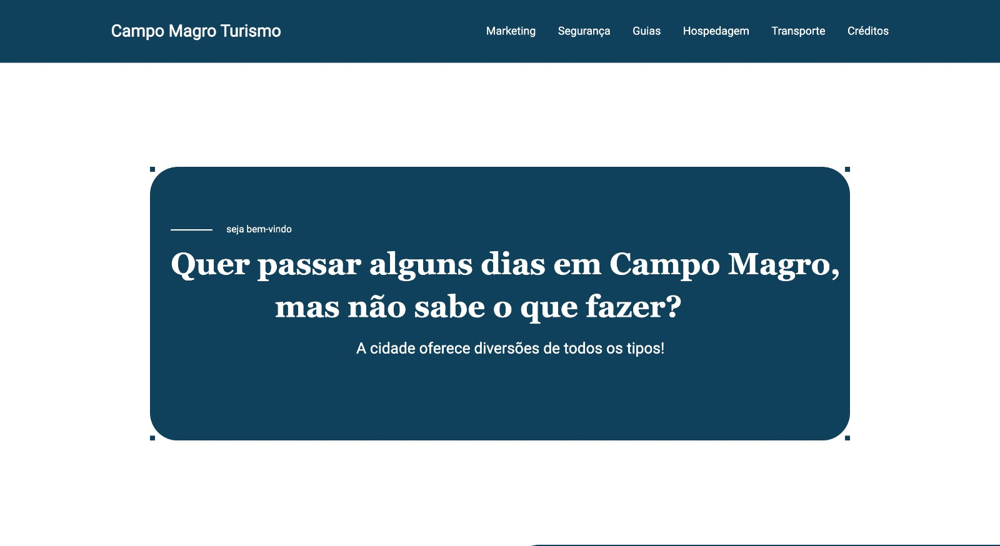
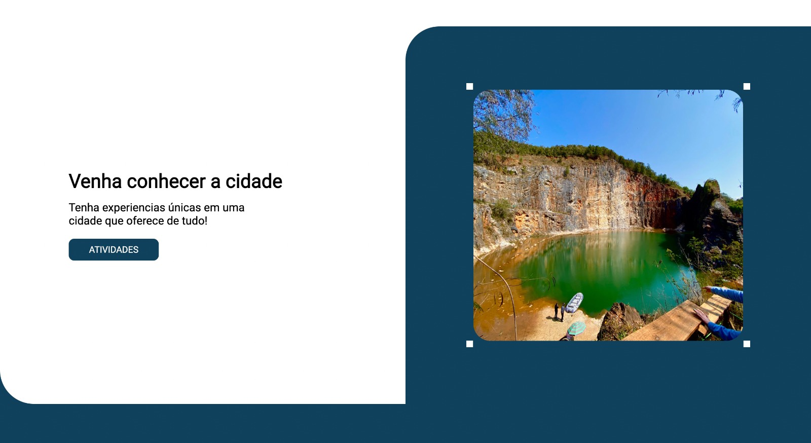
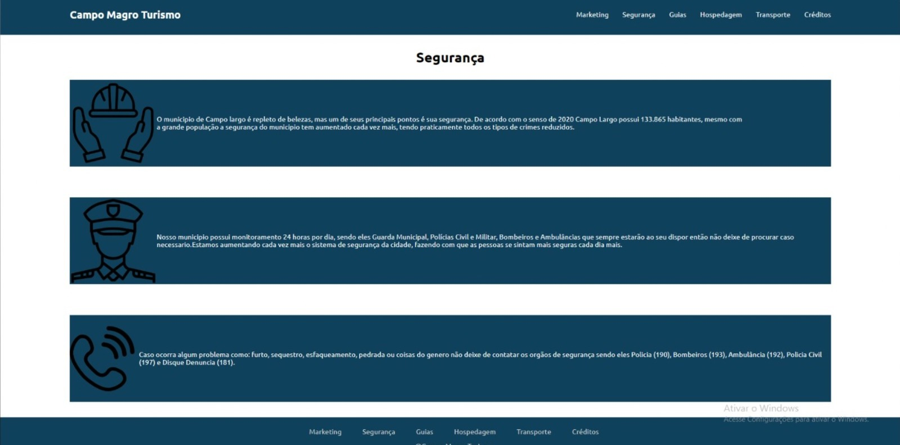
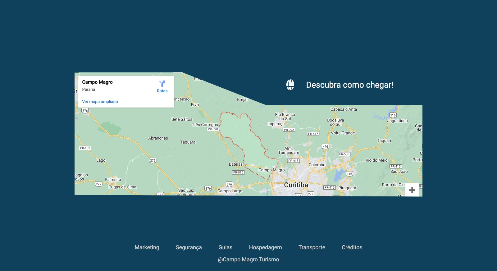

Bem-vindo ao website dedicado à cidade de Campo Magro! Aqui você encontrará um espaço virtual que
destaca essa joia
escondida, uma cidade encantadora e repleta de história que muitos ainda não conhecem. Nosso objetivo é
fornecer
informações valiosas e incentivar o turismo local.

Com um design simples e intuitivo, nosso website permite que os visitantes explorem tudo o que Campo
Magro tem a
oferecer. A página inicial oferece uma visão geral do que o website apresenta.


Além disso, oferecemos todas as principais informações necessárias para planejar uma viagem à cidade,
como restaurantes, hospedagem, segurança,etc.
